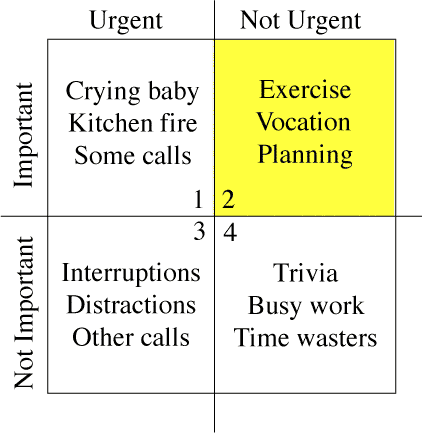

on professional certifications
Last Saturday I renewed my AWS Solutions Architect - Professional Certification for the third time. Admittedly, I walked in the exam with much less confidence than I am used to. The main difference was that I didn’t have the luxury of full, uninterrupted focus this time around: three years ago, in fact, I didn’t have a baby and I had a stable, full-time job that allowed me plenty of time to prepare.
Recently I’ve been trying to be more deliberate with how I decide to spend my time. So I asked myself why achieve a certification at all in the first place. Let’s start there.
Why get a certification at all?
-
credibility I like to think that certifications are honest signals in the software/infra industry. Instead of proving your abilities all the time on a specific platform or product, a certification provides a certain level of assurance to your potential employers or team members that you know what you’re talking about.
-
confidence Having a third party certify that you know what you’re talking about has also an effect on your confidence. Or at least it does on mine. I believe that for a consultant like myself, being able to confidently know what you know (and most importantly, what you don’t know) is fundamental for professional and personal growth.
-
structured knowledge Additionally, following the curriculum necessary to gain a certification puts all the sparse bits of knowledge you acquired through your experience in a systematic structure. I suspect this helps internalize and retain knowledge more efficiently which helps coming up with better solutions more quickly when needed.
-
higher rates I am very new to freelancing, but I am sure that having a couple of certifications has positively influenced the rate I’ve been offered. Even if you work for a company, getting a certification is certainly valuable for your career prospects and for the company itself given the partnership vendors offer.
When should you get a certification?
Now. Do it now. I am a big fan of Covey’s Seven Habits book and I believe that getting a certification lies in the “not urgent/important” quadrant. Given the reasons above it’s easy to argue that getting a certification is important.

However, it’s rarely urgent. The problem with non urgent tasks is that if you don’t plan ahead and set aside enough time to make them happen you’ll be too busy with urgent ones to actually do something about them. Just like physical exercise…
Resources for the AWS Solutions Architect - Professional certification
Having “real world” experience with designing and operating software solutions on AWS is truly helpful. However, given the pace at which AWS publishes new service, it is highly unlikely that you are familiar with each one of them. For this reason I highly recommend A Cloud Guru courses to have an idea of how the AWS landscape evolved.
Additionally, I find AWS whitepapers really good and full of concepts useful beyond the AWS ecosystem. Here are some of my favorites. I believe they are useful to pass the exam:
- AWS Cloud Adoption Framework
- AWS Well-Architected Framework
- AWS Operational Excellence Pillar
- AWS Storage Services Overview
- AWS Multiple Account Security Strategy
- AWS Security Best Practices
Yes, their titles do all start with “AWS”.